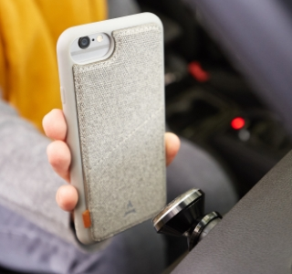
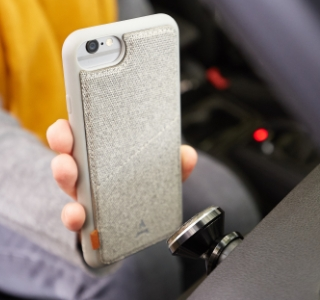

Une coque aimantée
… elle s’aimante directement sur le support de voiture ou le chargeur secteur aimanté de la collection Les Magnétiques (ou autre support compatible).
En savoir plusEmportez vos essentiels
… le rabat aimanté de la coque abrite un porte-carte qui permet de ranger une carte de façon discrète et sécurisée.
En savoir plus

Profitez davantage de votre smartphone
… la fonction support de la coque permet de poser votre smartphone en mode portrait ou paysage.
En savoir plus